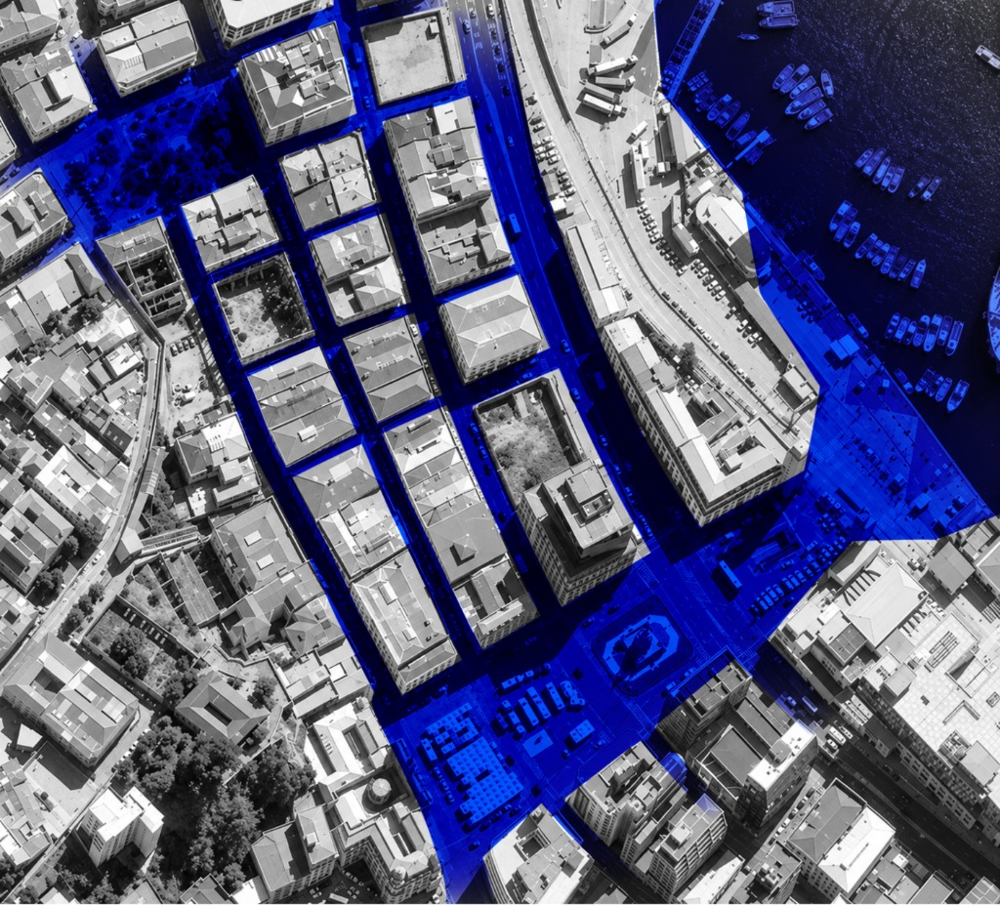
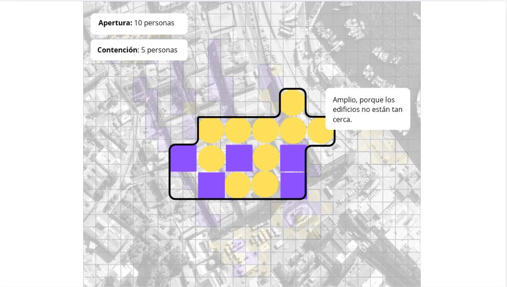

APERTURA Y AMPLITUD
Se observaron los grados de apertura y contención de los espacios, junto con las formas de circulación, detención y permanencia de las personas.
durante recorridos por sectores portuarios
Caminar por Barrio Puerto implica atravesar espacios que cambian constantemente. Desde la amplitud del borde costero hasta las calles delimitadas por edificios y fachadas, el recorrido presenta distintas condiciones que transforman la manera de experimentar el entorno.
Esta investigación busca comprender cómo cambia la percepción de las personas al desplazarse por estos espacios, observando la relación entre las características físicas del territorio y las experiencias que surgen durante el recorrido.
¿CÓMO CAMBIA LA PERCEPCIÓN DEL ENTORNO A MEDIDA QUE LAS PERSONAS ATRAVIESAN DISTINTAS CONDICIONES ESPACIALES DURANTE SUS RECORRIDOS POR SECTORES PORTUARIOS?
El estudio comenzó mediante recorridos y observaciones en terreno por Barrio Puerto. A través de fotografías, videos, croquis y registros, se identificaron diferencias en la configuración de los espacios y en las experiencias que estos posibilitan.
Se observaron los grados de apertura y contención de los espacios, junto con las formas de circulación, detención y permanencia de las personas.
Se identificaron elementos arquitectónicos, culturales, espaciales y viales que destacan durante el recorrido.
Se registraron los tipos de pavimento, sus condiciones, irregularidades y transiciones, considerando su relación con el desplazamiento.
La investigación permitió reconocer que Barrio Puerto no presenta una condición espacial homogénea. Durante los recorridos se alternan espacios abiertos, calles contenidas, superficies de distintas materialidades y lugares con diferentes intensidades de actividad.
Estas condiciones participan en la experiencia del desplazamiento: pueden modificar la amplitud visual, la relación con las fachadas, la atención dirigida al suelo y las posibilidades de detenerse o continuar caminando.
El estudio considera tanto aquello que puede observarse directamente en el territorio como aquello que las personas reconocen y expresan sobre su propia experiencia.

Esta plataforma se centra en la dimensión de apertura y amplitud espacial, mostrando cómo las personas perciben distintos sectores de Barrio Puerto.
Mediante una cuadrícula territorial, las respuestas se organizan según su ubicación, permitiendo comparar las percepciones de apertura y contención entre los ocho sectores estudiados.
La representación busca hacer visibles las diferencias entre las respuestas y reconocer cómo una misma área puede ser experimentada de distintas maneras por quienes la recorren.

La visualización tridimensional organiza los datos a través de tres plantas superpuestas, permitiendo comprender distintas dimensiones analíticas de un mismo territorio:
Representa las respuestas recopiladas en los ocho sectores. Los círculos amarillos corresponden a Apertura y los cuadrados morados a Contención. Cada figura representa una respuesta registrada.
Representa la configuración urbana de Barrio Puerto mediante una maqueta tridimensional, permitiendo reconocer la ubicación de los sectores, sus calles, manzanas y edificios.
Está destinada a representar los desplazamientos y flujos peatonales en relación con las condiciones espaciales. Esta dimensión se encuentra preparada para incorporar nuevos registros cuando estén disponibles.